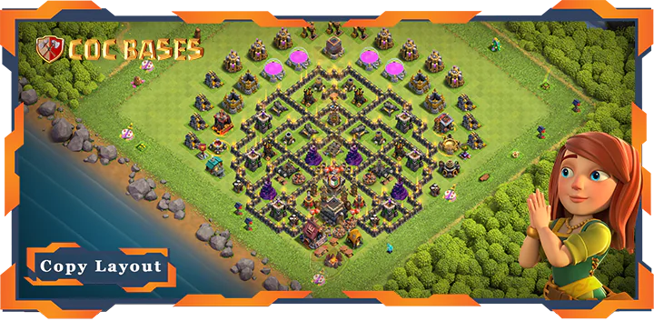
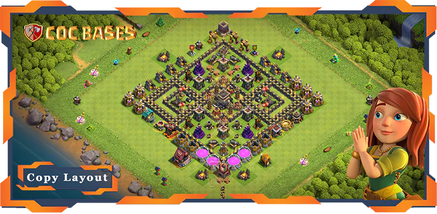
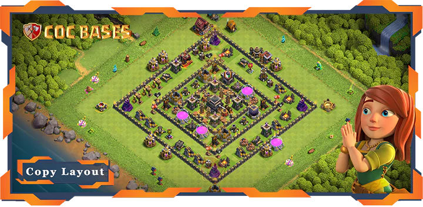
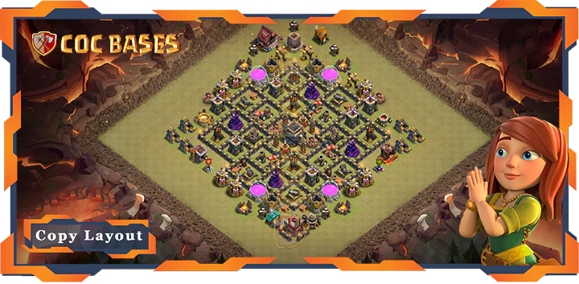
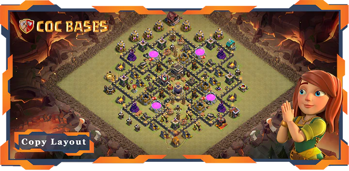
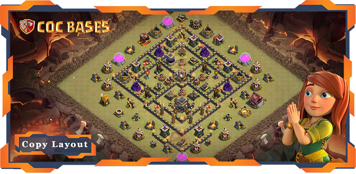
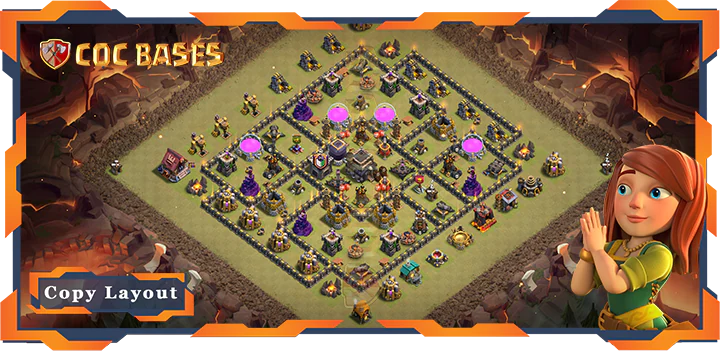
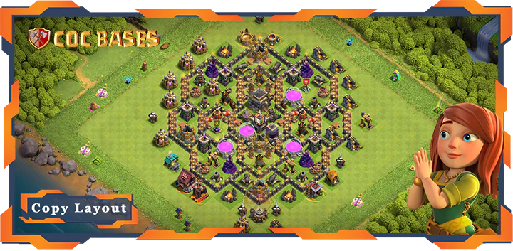
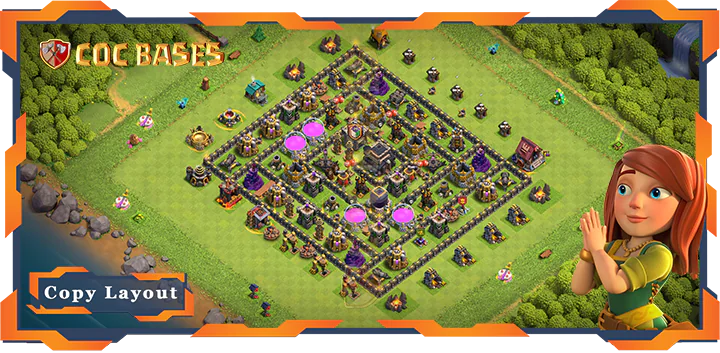

Make your Clash of Clans village tough to beat with our top Town Hall 9 bases! Town Hall 9 is a beast level, loaded with strong defenses like X-Bows and the Archer Queen. Whether you’re fighting in Clan Wars, saving loot, or climbing trophies, our fresh TH9 Bases stop attackers dead. Copy the best TH9 Bases Layouts with links. These are the updated Townhall 9 Layouts after the latest Clash of Clans update. Jump in and grab awesome Townhall 9 Bases to crush every battle!
About Town Hall 9
Town Hall 9 is a powerhouse in Clash of Clans. It costs 3,000,000 gold to upgrade from Town Hall 8 and takes 2 days. Your village gets a cool look with a glowing Town Hall. Townhall 9 Bases unlock awesome defenses like X-Bows, which hit ground and air troops, and the Archer Queen, a hero who snipes enemies from afar. You also get level 10 walls and strong troops like Hog Riders and Balloons. These make layouts great for stopping TH9 attacks like GoHo, Lavaloon, or Witch slaps.
Town Hall 9 is a favorite for players who want to rule wars and leaderboards. Supercell’s updates, like tweaks to X-Bow reload times, keep the meta fresh. Your bases need to stay new to keep up. Our site has the latest COC designs to protect your TH9 village, whether you’re in Clan War Leagues or guarding loot. Go to bases-coc.com/bases/th9/ to copy bases made by top players. Videos show how they stop real TH9 attacks. Town Hall 9 is all about power, and our TH9 Bases keep you ahead.
Categories of TownHall 9 Bases
Your TH9 bases come in different types to fit how you play Clash of Clans at Town Hall 9. Each needs a special layout to work best against TH9’s attacks. Here are the main categories, inspired by bases-coc.com, with designs you can copy:
War/CWL Bases: These are for TH9 Clan Wars and Clan War Leagues. They stop three-star attacks from armies like GoHo or Lavaloon. X-Bows and the Archer Queen go in the center. Level 10 walls slow enemies down. Air defenses and air bombs block TH9’s Balloons. Spring traps catch Hog Riders. Our war COC designs are tested against TH9 war attacks. Copy them at bases-coc.com/bases/th9/ to win wars.
Farming Bases: These save TH9’s gold, elixir, and dark elixir. Storages go deep inside, guarded by maxed Wizard Towers and Mortars. Walls make tight compartments to stop TH9 troops like Giants. The Town Hall is often outside to trick attackers away from loot. Giant Bombs stop ground attacks. Copy farming TH9 Layouts from our site to keep your TH9 loot safe while upgrading.
Hybrid Bases: These protect loot and trophies for TH9 players. They guard storages and the Town Hall with defenses like Cannons and Archer Towers. Hidden Teslas surprise TH9’s Hog Riders or Witches. They’re good for players who want both. Our site has hybrid designs that handle TH9 raids and trophy pushes. Copy them with links.
Anti 2 Stars Bases: These stop two-star attacks in TH9 wars or trophy matches. Defenses spread out to make attackers work hard. Mortars and Bomb Towers cover outer areas. Air bombs mess up TH9’s Balloon spam. Copy anti-2-star bases from bases-coc.com/bases/th9/ to keep enemies at one star.
Anti 3 Stars Bases: These block three-star attacks in TH9’s tough war scene. Compact layouts with central X-Bows and layered walls tire out armies like Witches. Hidden Teslas and spring traps stop TH9’s Hog Rider rushes. Our anti-3-star COC designs work against TH9 war plans. Copy them at bases-coc.com/bases/th9/.
Anti Air/Electro Bases: These crush TH9’s air attacks, like Balloons and Dragons. Maxed air defenses, air sweepers, and seeking air mines go in key spots. Walls push ground troops into Bomb Towers. These layouts destroy TH9’s air-heavy armies like Lavaloon. Copy anti-air/electro Townhall 9 Bases from our site to beat air raids.
Anti Trophy Bases: These make trophy pushing hard for TH9 attackers. The Town Hall sits in a strong core. Clan Castle troops like Wizards mess up TH9’s GoWiPe or Witch attacks. Defenses balance to counter TH9’s top strategies. Grab anti-trophy designs at bases-coc.com/bases/th9/ to hold your TH9 rank.
Funny/Troll Bases: These trick TH9 attackers for fun. They might leave the Town Hall open but hide Hidden Teslas or Giant Bombs to punish greedy raids. They catch TH9’s Giants off guard. Copy funny/troll bases from our site to mess with players in casual TH9 matches.
Legend League Bases: These are for TH9’s Legends League, where pros use attacks like GoHo or LaLo. The Town Hall is in the center, guarded by maxed X-Bows and Wizard Towers. Layered defenses stop TH9’s high-skill armies. Copy legend league bases from bases-coc.com/bases/th9/ to climb TH9’s ranks.









FAQs
TH9 War Bases with central X-Bows and air defenses rock. Copy them from here.
Use Farming Bases with storages inside, X-Bows in the center, and traps at key spots. Check out Farming Bases at bases-coc.com/bases/th9/.
Hybrid Bases are perfect for Trophy Pushing. Look for designs that protect your Town Hall and storages. Find them at bases-coc.com/bases/th9/.
Anti-Air bases, with maxed air defenses, keep Balloons and Dragons away. See Anti-Air bases at bases-coc.com/bases/th9/.
Conclusion
Whether you're a beginner or a seasoned player, choosing the right Town Hall 9 base layout can make a big difference in your success in Clash of Clans. From protecting your loot to defending against war attacks, each base type has a unique advantage. Keep experimenting with different designs and stay updated with the latest strategies to maximize your TH9's potential. Don't forget to visit bases-coc.com/bases/th9/ for the latest base layouts, guides, and tips!